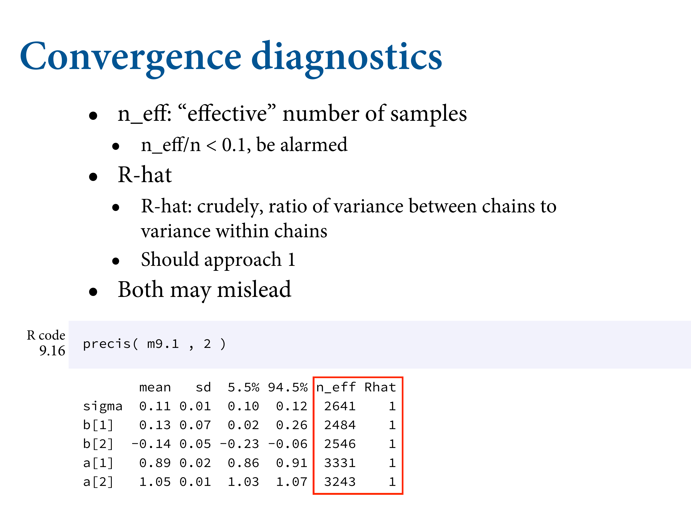
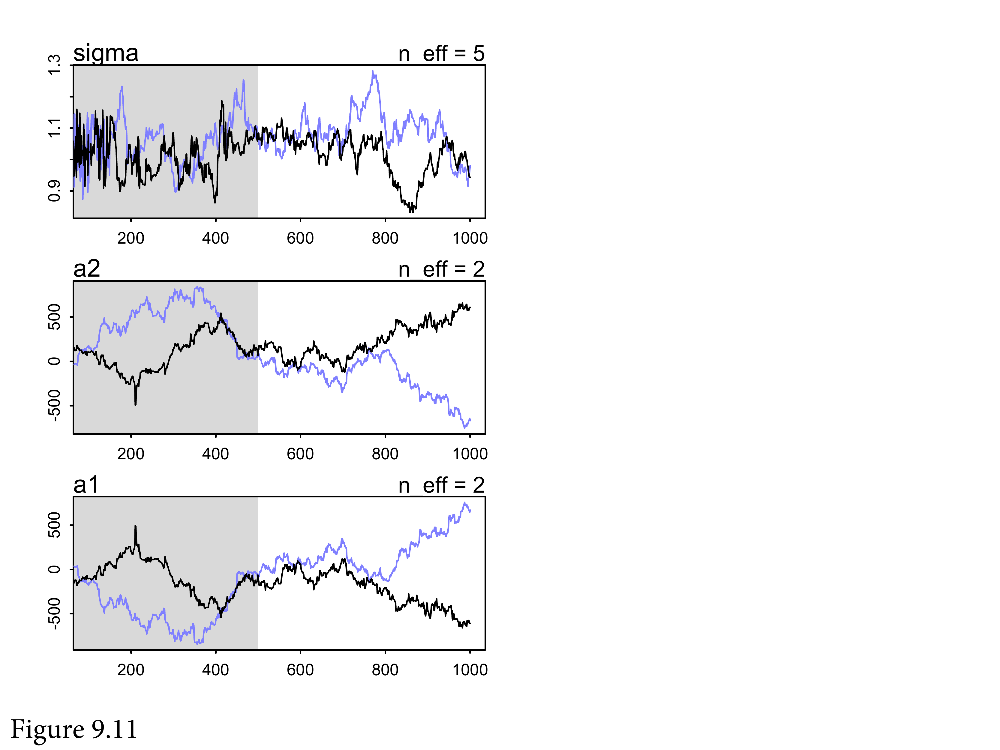

Chapter 9 Markov Chain Monte Carlo
library(here)
source(here::here("code/scripts/source.R"))slides_dir = here::here("docs/slides/L10")Major transition point where we switch over algorithms for estimating the posterior.
As a reminder, Bayesian inference is not about how to get the posterior, it’s just about the posterior distribution. There are a lot of ways to get it. In this case, you can calculate it a huge number of ways and they’re all valid. In biology, Bayesian is thought of as synonymous with Markov Chains. But you can use Markov chains for lots of things. There’s a bunch of additional machinery you need to fool around with when you play with Markov chains.
![We'll discuss for ways to compute the posterior. The analytical approach was used to create the previous slide. Interesting models, but almost always impossible. So you need another way to do the numerical differentiation. Grid I showed you earlier. You've been using `quap` for months now. Unreasonably effective for lots of models. If you're doing maximum likelihood estimation, you're doing the same steps. There's a connection there between lots of standard tools. But now we're going to get into things that make the connection a lot blurrier.](slides/L10/03.png)
We’ll discuss for ways to compute the posterior. The analytical approach was used to create the previous slide. Interesting models, but almost always impossible. So you need another way to do the numerical differentiation. Grid I showed you earlier. You’ve been using quap for months now. Unreasonably effective for lots of models. If you’re doing maximum likelihood estimation, you’re doing the same steps. There’s a connection there between lots of standard tools. But now we’re going to get into things that make the connection a lot blurrier.
King Markov rules a bunch of islands.
There are 10, with different population sizes and densities.
They’ll let you tax them as long as you visit them. You must visit them in proportion to their population density. So you need some simple algorithm.
You start on a particular island. Now you’re ready to move to another one. You flip a coin to decide on which island.
Then you send a servant across to the proposed island and they take a survey of how many people are on the island. You do the same for the island you’re on. We’ll call that \(p_5\), and the current island \(p_4\).
You want to compare these two numbers in a particular way.

You want to take the ratio of them, and that will be the probability of accepting the proposal of moving from island 4 to 5. If it’s greater than 1, you’ll move.
So you move to the proposal island with that probability.
This is a valid way to fill the contract. It guarantees that in the long run, you will visit each island in proportion to its relative populations size. This is an example of Markov Chain Monte Carlo.
![It's the most famous, and the most primitive. The huge advantage is if you don't know the distribution of population sizes, you actually don't need to actually visit each of the islands in proportion to their population sizes. We don't know the posterior distribution, but we can visit each part of it in proportion to its relative probability. That's the magic: we can sample from the distribution that we don't know. Also going to introduce you to Stan. `ulam` is a simplified input that will make a custom Markov chain for you.](slides/L10/15.png)
It’s the most famous, and the most primitive. The huge advantage is if you don’t know the distribution of population sizes, you actually don’t need to actually visit each of the islands in proportion to their population sizes. We don’t know the posterior distribution, but we can visit each part of it in proportion to its relative probability. That’s the magic: we can sample from the distribution that we don’t know. Also going to introduce you to Stan. ulam is a simplified input that will make a custom Markov chain for you.
![Here is the R script version of King Monty's royal tour. Metropolis was also a person. Let's walk through each line to get a sense of how simple it is. Positions is an empty vector. We'll store the islands the King is on here. Then we'll just put him on island 10 (`current`). Then we loop over the weeks, and record where the king is now. Then we'll flip a coin to generate the proposal. Finally there's the action. We've got the ratio, where we're asserting the relative popn size is the same as their number.](slides/L10/16.png)
Here is the R script version of King Monty’s royal tour. Metropolis was also a person. Let’s walk through each line to get a sense of how simple it is. Positions is an empty vector. We’ll store the islands the King is on here. Then we’ll just put him on island 10 (current). Then we loop over the weeks, and record where the king is now. Then we’ll flip a coin to generate the proposal. Finally there’s the action. We’ve got the ratio, where we’re asserting the relative popn size is the same as their number.
Run that code and plot it out, and you’ll get this. You can see the King zig-zagging around. You can see he gets stuck on densely populated islands. In the long run, it’s in the right proportions.
Chain is more obvious here.
Starting to emerge that he’s visiting 10 more. After 2000 weeks, we’re almost there. Guaranteed to work in the long run. What the ‘long run’ means is controversial.
Summary slide. Not sensitive to initial conditions. In this algorithm you need symmetric proposals… there are other algorithms without this condition, which improves them.

The population size is the posterior probability. This works no matter how many parameters you have, in the long run. The long run is really long if you have a lot of parameters. That’s the snag.

Here’s the famous paper where they first implemented it. Some famous people here. Rosenbluth did most of the programming, and Teller figured out the memory. The fed the tape in with a bicycle wheel. This was all part of the Manhattan project - for making fusion bombs post-war.
Metropolis in the foreground. MANIAC in the background. Currently a laptop can do billions of multiplications per second.
What are Markov Chains? The Metropolis is the simplest verison. Named after Markov. What makes something a Markov chain only depends on where you are now, not where you’ve been. What matters is the current state. Great for computing because you don’t need to store a bunch of numbers.
![Sometimes you get a model that is to hard to integrate. Often with integrals you're guessing. Not like derivatives. Going in the other direction is much harder. Integrating is sometimes not practical. MCMC is just one of the methods of estimating it. Optimisation (like quap) often targets the wrong area of the distribution ('concentration of measure'). This is why everyone gives up on optimisation once you have more than 100 parameters. This is bread and butter sort of stuff in applied statistics.](slides/L10/25.png)
Sometimes you get a model that is to hard to integrate. Often with integrals you’re guessing. Not like derivatives. Going in the other direction is much harder. Integrating is sometimes not practical. MCMC is just one of the methods of estimating it. Optimisation (like quap) often targets the wrong area of the distribution (‘concentration of measure’). This is why everyone gives up on optimisation once you have more than 100 parameters. This is bread and butter sort of stuff in applied statistics.
![There are a bunch of different MCMC strategies. Hastings showed that you don't need symmetric proposals, which made them more efficient. Gibbs sampling is extremely efficient, but basically Metropolis. What they have in common is they guess and check. They make a proposal to move somewhere, check the posterior probability at that location, then decide to move. If you make dumb proposals, you won't move. The goal is to constantly move by making really smart proposals. Guess and checking gives you dumb proposals, so you need a completely different strategy: Hamiltonian. Really efficient and can make models with tens of thousands of parameters. Hamiltonians use a gradient.](slides/L10/26.png)
There are a bunch of different MCMC strategies. Hastings showed that you don’t need symmetric proposals, which made them more efficient. Gibbs sampling is extremely efficient, but basically Metropolis. What they have in common is they guess and check. They make a proposal to move somewhere, check the posterior probability at that location, then decide to move. If you make dumb proposals, you won’t move. The goal is to constantly move by making really smart proposals. Guess and checking gives you dumb proposals, so you need a completely different strategy: Hamiltonian. Really efficient and can make models with tens of thousands of parameters. Hamiltonians use a gradient.


Simulation of the MC run. Red it stays, green is moves. It stacks the distribution as it moves. Metropolis works really well. The problem comes when the distribution is not as nice as a Gaussian hill.


… like a donut. In high-dimensional spaces, it gets concentrated into thin shells. Picture a hyper-donut. We must sample from it. And the Metropolialogrithm is really bad like that, because it makes a lot of proposals into dead space. You can see it’s a donut, but it doesn’t. Now the long run is very long indeed. It gets stuck in narrow regions. The basic problem is that the proposals don’t know the shape of the distribution.
You can tune it, but there’s a really tight trade-off. On the left we start with the Markov chain. Filled circles are accepted. If you only consider points near you, you’ll get more valid proposals, but you’ll move really slow. If we lengthen, then we reject more. This is the fundamental trade-off. Really you can’t win. Gibbs can do a little better. Butas soon as the dimensions increase, the problem eventually appears. The issue is guess and check.
![So what do we do instead? This is a different process entirely. No guess and check. Instead, it runs a physics simulation. We'll represent our parameter state as a coordinate in some high-dimensional space. In more dimensions, you have some hyperspace. You're a particle in this space in some position. Then we'll flick you, and it'll cruise on some surface - the posterior distribution - and record where you stop, then do it again. Because it follows the curvature, it always makes good proposals because it doesn't go into bad areas. So there's no more guessing and checking, all proposals are good proposals.](slides/L10/32.png)
So what do we do instead? This is a different process entirely. No guess and check. Instead, it runs a physics simulation. We’ll represent our parameter state as a coordinate in some high-dimensional space. In more dimensions, you have some hyperspace. You’re a particle in this space in some position. Then we’ll flick you, and it’ll cruise on some surface - the posterior distribution - and record where you stop, then do it again. Because it follows the curvature, it always makes good proposals because it doesn’t go into bad areas. So there’s no more guessing and checking, all proposals are good proposals.

Continuous urban smear. More living in the bottom. How to use this? Hamiltonian.


In the book, here’s a simulation. Time on the horizontal. It’s Gaussian. You take the log of a Gaussian and it’s a parabola. So you start in the middle. But you need to know the contour.
Roll the marble and periodically stop and record the position. Over time you get position samples that are proportional to the shape, as if there is more probability in the bottom.

Again, 2D Gaussian hill. It’s a bowl now. Flick the simulation and do the pass. Always ends up inside the bowl. What stops you from getting into the silly spots. Better living through physics.

Because each proposal is accepted, you need many many fewer. So a lot of efficiency. Using the code in the chapter, we get tours. Start with x on the left, and it rolls down the valley. Eventually we stop, then flick it again. High acceptance rate, but the sequential auto-correlation is very low.

Hamiltonian MC does really well with the donut. It knows the curvature. Tours the whole thing, and you don’t get stuck. If you have 27K parameters, that’s really handy.

You need to put in momentum variables now. You need to choose the mass. The system has energy, which is how to check that it’s working. If energy is not conserved, the simulation stops working. With Metropolis, you won’t know. But this breaks dramatically. Also need gradients - the log posterior at a particular point.

Not that complicated, so tour through it.
![Problem is that there's stuff to pick, namely the step size (the length of time we run a segment). You want basically the biggest step size, but if you make it too big, you can overshoot the shape. THen you need to choose the number of steps you'll take in each trajectory. If you choose bad values for those, you'll have a bad time. In general it's not as bad as it gets in a 2D Gaussian. Since it's a parabolic bowl, you can get these parabolic loops. In the long run it'll still work, but it's super inefficient. How do you fix it? Choose good values for the tuning parameters, which is annoying.](slides/L10/44.png)
Problem is that there’s stuff to pick, namely the step size (the length of time we run a segment). You want basically the biggest step size, but if you make it too big, you can overshoot the shape. THen you need to choose the number of steps you’ll take in each trajectory. If you choose bad values for those, you’ll have a bad time. In general it’s not as bad as it gets in a 2D Gaussian. Since it’s a parabolic bowl, you can get these parabolic loops. In the long run it’ll still work, but it’s super inefficient. How do you fix it? Choose good values for the tuning parameters, which is annoying.

Here’s the simulation where it resembles an Ouroboros. Since you don’t know the distribution, it’s hard to say what the best tuning parameters are.
Stan does two things: 1) Warm up phase, then maximises the step size. 2) Runs the NUTS2 algorithm.

Here’s NUTS. It runs the simulation in both directions in time. It imagines a simulation that loops back on itself, and runs it backwards from teh starting point, and goes backdwards at the same time, but when it sees itself turning around, it stops. This means it figures out a good number of leapfrog steps for each trajectory. So you don’t need to make a bunch of decisions.

One of the mathematicians working with Metropolis. Built mechnical MCMC simulators. Also did important work in biology. Could run Stan on anything you like.


There are still problems. If you have multiple separated hills, like in factored analytical models, the wait between hills can be long indeed. In my experience you handle this by changing the geometry of the model. We get these with item-response theory models.

SWant you to recognise a bad chain when you see it.
Run quap as before. Now let’s do this with a MC.

Same formula, but slim dataset with just the variables of interest. 4 chains on separate cores.

ulam translates this into raw Stan code. A bunch of formal variable definitions.

What happens here is it reports each chain. Warmup figures out the step size. Total samples is the length of each chain minus the warmup. You won’t need more than a couple of thousand samples to get a good estimate.

n_eff is the number of effective samples. Note that it’s greater than the number of samples from the MC. True because it takes dispersed samples. The number of samples you would get if there was no auto-correlation between sequential samples. Rhat is the Gelman-Ruben diagnostic. You want it to converge across chains. They should all look the same and be exchangeable.


What you want to see are these hairy caterpillars.




You might get something like this instead. Not good.


Typically when you’re having trouble getting your chain to work, it’s because there’s something wrong with your model definition. So first check the model.

